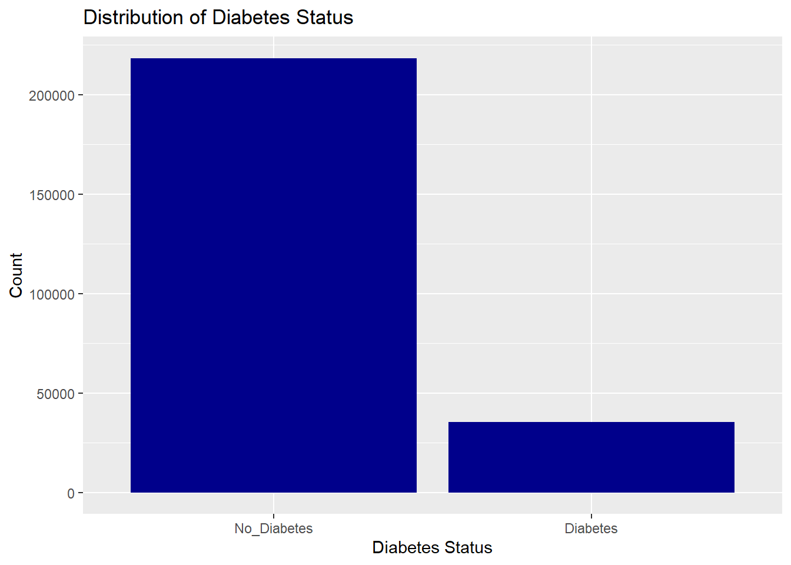
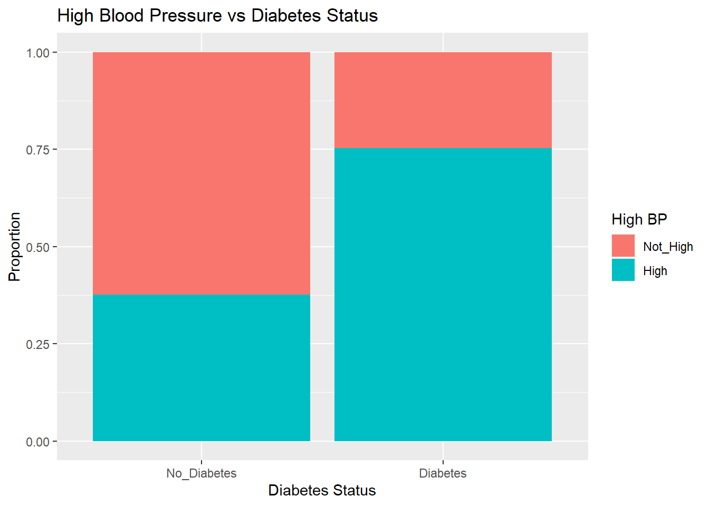
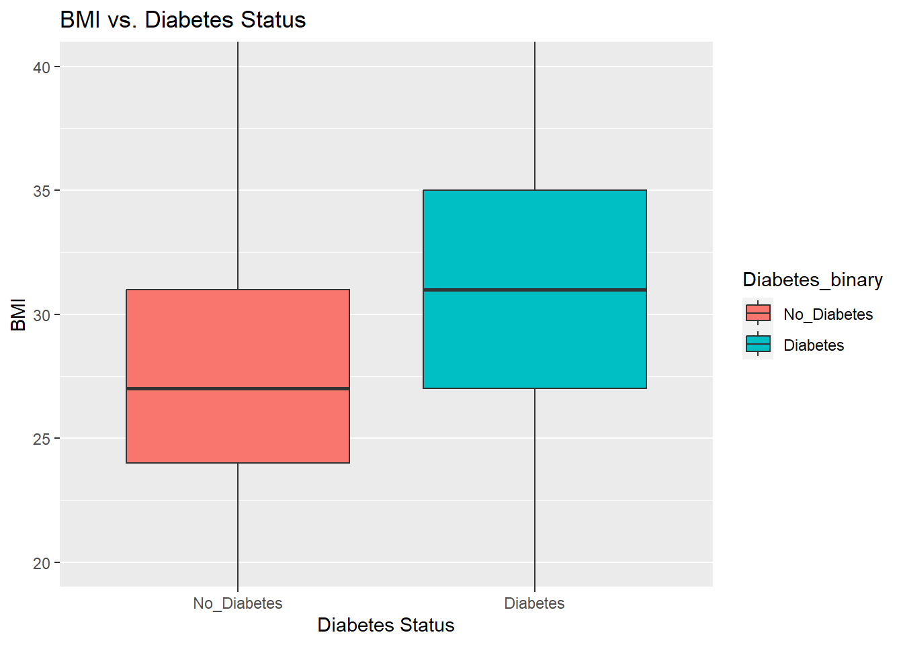
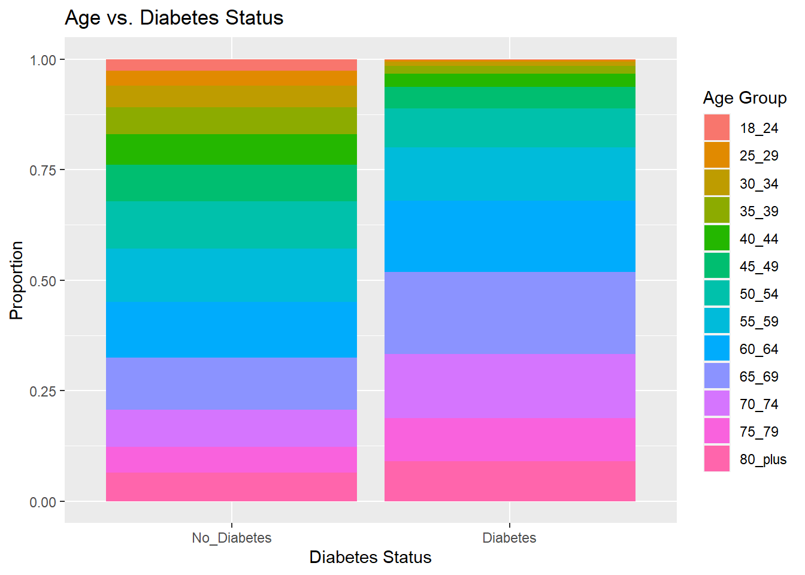

── Conflicts ────────────────────────────────────────── tidyverse_conflicts() ──
✖ dplyr::filter() masks stats::filter()
✖ dplyr::lag() masks stats::lag()
ℹ Use the conflicted package (<http://conflicted.r-lib.org/>) to force all conflicts to become errors
[[1]]
NULL
Introduction
For this final project, we will be working with a dataset from the Diabetes Health Indicators with a response variable indicating whether a patient doesn’t have diabetes or has diabetes. The variables that we will be investigating in comparison to the response variable are shown below:
HighBP: High Blood Pressure
0 = not high
1 = high BP
BMI: Body Mass Index
Smoker
0 = >100 cigarettes smoked in your entire life
1 = <100 cigarettes smoked in your entire life
PhysActivity
0 = no physical activity in the past 30 days
1 = yes physical activity in the past 30 days
Veggies: Consume vegetables 1 or more times per day
0 = no
1 = yes
Sex
0 = female
1 = male
Age: 13-level age category
1 = 18-24
9 = 60-64
13 = 80 or older
Income: 8-level scale
1 = less than $10,000
5 = less than $35,000
8 = $75,000 or more
Purpose of EDA and Ultimate Goal of Modeling
The purpose of our Exploratory Data Analysis (EDA) is to understand the underlying patterns and relationships in the dataset, particularly how the different variables relate to the presence or absence of diabetes. Through EDA, we aim to:
Identify and handle missing data
Detect outliers and understand their impact
Explore the distribution of variables
Analyze correlations between variables
The ultimate goal of our modeling is to develop a predictive model that can accurately classify individuals into one of three categories: no diabetes, prediabetes, or diabetes. By understanding the indicators and risks associated with diabetes, we hope to create a model that can assist healthcare professionals in early detection and intervention, potentially improving patient outcomes.
Data
Reading in the data using a relative path and manipulating it
# reading in the csv fileDBH <-read_csv("diabetes_binary_health_indicators_BRFSS2015.csv")
Rows: 253680 Columns: 22
── Column specification ────────────────────────────────────────────────────────
Delimiter: ","
dbl (22): Diabetes_binary, HighBP, HighChol, CholCheck, BMI, Smoker, Stroke,...
ℹ Use `spec()` to retrieve the full column specification for this data.
ℹ Specify the column types or set `show_col_types = FALSE` to quiet this message.
Diabetes_binary HighBP BMI Smoker PhysActivity
0 0 0 0 0
Veggies Sex Age Income
0 0 0 0
# None found so we are good to move on!
Summarizations
First we will start with summary statistics for our data
summary(DBH)
Diabetes_binary HighBP BMI Smoker
No_Diabetes:218334 Not_High:144851 Min. :12.00 No :141257
Diabetes : 35346 High :108829 1st Qu.:24.00 Yes:112423
Median :27.00
Mean :28.38
3rd Qu.:31.00
Max. :98.00
PhysActivity Veggies Sex Age Income
No : 61760 No : 47839 Female:141974 60_64 :33244 75k_or_more:90385
Yes:191920 Yes:205841 Male :111706 65_69 :32194 50k_to_75k :43219
55_59 :30832 35k_to_50k :36470
50_54 :26314 25k_to_35k :25883
70_74 :23533 20k_to_25k :20135
45_49 :19819 15k_to_20k :15994
(Other):87744 (Other) :21594
by(DBH, DBH$Diabetes_binary, summary)
DBH$Diabetes_binary: No_Diabetes
Diabetes_binary HighBP BMI Smoker
No_Diabetes:218334 Not_High:136109 Min. :12.00 No :124228
Diabetes : 0 High : 82225 1st Qu.:24.00 Yes: 94106
Median :27.00
Mean :27.81
3rd Qu.:31.00
Max. :98.00
PhysActivity Veggies Sex Age Income
No : 48701 No : 39229 Female:123563 60_64 :27511 75k_or_more:83190
Yes:169633 Yes:179105 Male : 94771 55_59 :26569 50k_to_75k :37954
65_69 :25636 35k_to_50k :31179
50_54 :23226 25k_to_35k :21379
70_74 :18392 20k_to_25k :16081
45_49 :18077 15k_to_20k :12426
(Other):78923 (Other) :16125
------------------------------------------------------------
DBH$Diabetes_binary: Diabetes
Diabetes_binary HighBP BMI Smoker PhysActivity
No_Diabetes: 0 Not_High: 8742 Min. :13.00 No :17029 No :13059
Diabetes :35346 High :26604 1st Qu.:27.00 Yes:18317 Yes:22287
Median :31.00
Mean :31.94
3rd Qu.:35.00
Max. :98.00
Veggies Sex Age Income
No : 8610 Female:18411 65_69 :6558 75k_or_more:7195
Yes:26736 Male :16935 60_64 :5733 35k_to_50k :5291
70_74 :5141 50k_to_75k :5265
55_59 :4263 25k_to_35k :4504
75_79 :3403 20k_to_25k :4054
80_plus:3209 15k_to_20k :3568
(Other):7039 (Other) :5469
Now we will create some visualizations to help better understand our data. First a bar plot to show distribution of patients across the two categories, this gives us a sense of the prevalence of the condition in the dataset.
ggplot(DBH, aes(x = Diabetes_binary)) +geom_bar(fill ="darkblue") +labs(title ="Distribution of Diabetes Status", x ="Diabetes Status", y ="Count")

Next, a bar plot that demonstrates the proportion of individuals with high blood pressure across the diabetes status. This allows us to observe if high blood pressure is more common in people with or without diabetes.
ggplot(DBH, aes(x = Diabetes_binary, fill = HighBP)) +geom_bar(position ="fill") +labs(title ="High Blood Pressure vs Diabetes Status", x ="Diabetes Status", y ="Proportion", fill ="High BP")

This box plot shows the distribution of BMI values across the diabetes status, this helps identify if there is a significant difference in BMI across the diabetes variable.
ggplot(DBH, aes(x = Diabetes_binary, y = BMI, fill = Diabetes_binary)) +geom_boxplot(outlier.shape =NA) +coord_cartesian(ylim =c(quantile(DBH$BMI, 0.05), quantile(DBH$BMI, 0.95))) +labs(title ="BMI vs. Diabetes Status", x ="Diabetes Status", y ="BMI")

Lastly, a bar plot that helps indicate the distribution of age groups across the different diabetes status, it helps reveal if certain age groups are more susceptible to diabetes or not.
ggplot(DBH, aes(x = Diabetes_binary, fill = Age)) +geom_bar(position ="fill") +labs(title ="Age vs. Diabetes Status", x ="Diabetes Status", y ="Proportion", fill ="Age Group")

Saving as a csv to use for modeling
# Reading in the datawrite_csv(DBH, "preprocessed_diabetes_data.csv")